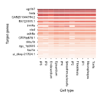

Example of Zebrafish Heart Regeneration¶
In this tutorial, we demonstrate how to use LineageGRN on a Zebrafish heart dataset. This dataset comprises:
Lineage tracing data: Single-cell lineage barcode data of the sampled cells from the zebrafish heart.
scRNA-seq data: Single-cell transcriptomic profiles capturing the expression of genes across developmental stages.
scATAC-seq data: Chromatin accessibility profiles providing complementary information on regulatory region activity.
From the combined single-cell transcriptomic and chromatin accessibility measurements, we identified:
41 regulatory genes
132 target genes
In this example, we can:
Track reconfiguration patterns of regulatory networks along the cell fate map.
Identify key drivers of cell differentiation.
Identify key drivers of cell fate bias.
Investigate both specific and constitutive regulatory interactions among the most influential genes.
Data Acquisition¶
Time-Scaled Cell Fate Map¶
Raw lineage barcode capturing the cell division dynamics throughout zebrafish heart regeneration.
scRNA-seq Data¶
Raw scRNA-seq data providing gene expression profiles across diverse zebrafish heart cell types.
scATAC-seq Data¶
Raw scATAC-seq data providing chromatin accessibility profiles across all tissues in the zebrafish heart.
Data Preprocessing¶
Time-scaled Cell Fate Map¶
Preprocessing Steps¶
Convert the input data to FASTA format
The input data is a CSV file containing cell barcodes and sequences.
Example: The CSV file contains columns for unique cell IDs and raw barcodes:
cell_id
raw_barcodes
Cell_1
ATGCGTAC…
Cell_2
TTACGCTA…
The sequences are converted to FASTA format for MUSCLE alignment.
Sequence Alignment
Sequences are aligned using MUSCLE to identify similarities and mutations.
Data Parsing and Processing
Aligned sequences are parsed and saved in CSV format.
The data is sorted by sequence IDs and processed to generate a mutation matrix.
Mutation Matrix Generation
The mutation matrix is created by comparing sequences in defined regions and identifying differences.
Example: The mutation matrix shows sequence differences across defined regions:
cell_id
barcodes
Cell_1
‘0’,’1’,’1’,’0’,…
Cell_2
‘0’,’2’,’1’,’3’,…
References and Tools Used¶
Muscle for sequence alignment.
scRNA-seq Data¶
Preprocessing Steps¶
Quality Control:
Remove cells with low gene expression levels or signs of cell death.
Highly Variable Genes (Optional):
Select highly variable genes for further analysis to focus on biologically significant variation.
Normalization:
Normalize gene expression levels so that the average expression in each cell is standardized to 0 and the variance to 1.
References and Tools Used¶
Preprocessed Formats¶
Columns:
Gene Name: Name of the gene (e.g., GENE_A).Cell Name: Unique identifier for each cell.Gene Expression: Normalized gene expression value.Cell Cluster ID/Cell Type: Cluster or cell type label.Gene Type: EitherRegulatory GeneorTarget Gene.
scATAC-seq Data¶
Preprocessing Steps¶
Chromatin Co-accessibility Analysis
Process the raw data using the
ciceropackage to identify two peaks (peak1andpeak2) as chromatin fragments, along with a co-accessibility score.Remove rows with a
co-access scoreless than 0.1.
Peak-to-Gene Mapping
Map
peak2fragments to gene IDs.Match gene IDs to gene names, which are identified as target genes.
Motif Identification
Perform motif scanning on
peak1regions to identify the regulatory genes that bind to each peak.Note: A single
peak1may contain multiple motif IDs; hence one target gene may have multiple regulatory genes.
Regulatory Network Construction
Match
peak1to regulatory genes, andpeak2to target genes.The co-accessibility score represents the shared regulatory relationship strength.
References and Tools Used¶
BSgenome.Celegans.UCSC.ce10 R package (this is provided as an example and can be replaced with an appropriate zebrafish genome package)
Preprocessed Formats¶
Columns:
Regulatory Gene: Name of the regulatory gene associated withpeak1(from motif scanning).Target Gene: Name of the target gene associated withpeak2(based on genomic position).Co-access Score: Calculated by theciceropackage.Cell Cluster ID/Cell Type: Provides additional context for the regulatory relationship.
Reconstruction of Time-Scaled Cell Fate Map¶
import numpy as np
import pandas as pd
# Read the barcode site file and cell type information, and set the time scale parameter t_S.
sc_mat = np.array(pd.read_csv('examples/data/zebrafish/input_data/barcode_site.csv', index_col=0))
cell_types = pd.read_csv("examples/data/zebrafish/input_data/cell_types.csv", index_col=0).to_dict()['celltypes']
t_S = 15
# Generate edge information and the fate_map object, also returning a flag indicating whether edges were generated.
edges, fate_map = get_fate_map(sc_mat, cell_types, t_S, beta=1, max_iter=1000, tol=1e-5, edge=True)
Inference of Gene Regulatory Networks¶
# Define file paths
atac_file_path = "examples/data/zebrafish/input_data/atac_data.csv"
expression_file_path = "examples/data/zebrafish/input_data/expression_data.csv"
saved_dir = 'examples/results/zebrafish'
# Read regulator and target gene names
regulator_names = list(pd.read_csv("examples/data/zebrafish/additional_input_data/regulatory_genes_name.csv")['x'])
target_gene_names = list(pd.read_csv("examples/data/zebrafish/additional_input_data/target_genes_name.csv")['x'])
# Initialize GRNInference object and perform GRN inference
grn_inference = GRNInference(atac_file_path, expression_file_path, fate_map, saved_dir)
grn_inference.infer_grn(20)
target_networks_dict = grn_inference.get_target_networks(0)
Downstream Analysis¶
Revealing the Structural Dynamics of GRNs¶
# Retrieve regulatory gene information under specified conditions.
regulatory_gene_dict = get_regulators('admb', 'Tcells', saved_dir, regulator_names)
{'nr4a1': 0.11825367777901924, 'mafbb': 0.4228665855088654, 'en1a': 0.6564480066299438, 'rorc': 0.0, 'nfatc2b': 0.6564480066299438, 'tbx21': -0.05690246596441495, 'phox2a': 0.6564480066299438, 'pax1a': 0.6564480066299438, 'runx3': 0.15006246468573334, ...}
target_gene_dict = get_target_genes('tbx21', 'Tcells', saved_dir, regulator_names)
{'BX005375.1': -4.633242599055995e-05, 'ugt1b7': 0.2529791885195795, 'aqp1a.1': 0.737025601278955, 'ostn': 0.4207163038852826, ...}
Visualization Examples
Visualization of Negative Regulation Changes
plot_target_genes_along_fatemap(target_gene_names, regulator_names, 'negative', saved_dir, list(fate_map.nodes.keys()), 0, output_path)
Visualization of Positive Regulation Changes
plot_target_genes_along_fatemap(target_gene_names, regulator_names, 'positive', saved_dir, list(fate_map.nodes.keys()), 0, output_path)

Visualization of Dynamic Regulatory Networks for ‘klf2a’
path = fate_map.get_path("Endocardium")
plot_regulatory_network_along_fatemap('klf2a', dynamic_networks_dict, path, output_path, 0.12)
Visualization of Regulatory Strength on Target Gene ‘uchl1’
plot_regulatory_strength_along_fatemap(saved_dir, path, regulator_names, 'uchl1', output_path)
Identifying Key Genes Driving Differentiation¶
# Read gene expression matrices for various cell types.
Endocardium_gene_expression_matrix = pd.read_csv('examples/data/zebrafish/additional_input_data/Exp_Endocardium.csv', index_col=0)
Epicardium_gene_expression_matrix = pd.read_csv('examples/data/zebrafish/additional_input_data/Exp_Epicardium.csv', index_col=0)
Fibroblasts_gene_expression_matrix = pd.read_csv('examples/data/zebrafish/additional_input_data/Exp_Fibroblasts.csv', index_col=0)
Smoothmusclecells_gene_expression_matrix = pd.read_csv('examples/data/zebrafish/additional_input_data/Exp_muscle.csv', index_col=0)
Macrophages_gene_expression_matrix = pd.read_csv('examples/data/zebrafish/additional_input_data/Exp_Macrophages.csv', index_col=0)
Tcells_gene_expression_matrix = pd.read_csv('examples/data/zebrafish/additional_input_data/Exp_tcell.csv', index_col=0)
# Set index to the combined list of target and regulatory gene names.
common_index = target_gene_names + regulator_names
Endocardium_gene_expression_matrix.index = Epicardium_gene_expression_matrix.index = Fibroblasts_gene_expression_matrix.index = Smoothmusclecells_gene_expression_matrix.index = Macrophages_gene_expression_matrix.index = Tcells_gene_expression_matrix.index = common_index
# Extract highly expressed target genes.
Endocardium_genes = [i for i in get_high_expression_genes(Endocardium_gene_expression_matrix) if i in target_gene_names]
Epicardium_genes = [i for i in get_high_expression_genes(Epicardium_gene_expression_matrix) if i in target_gene_names]
Fibroblasts_genes = [i for i in get_high_expression_genes(Fibroblasts_gene_expression_matrix) if i in target_gene_names]
Smoothmusclecells_genes = [i for i in get_high_expression_genes(Smoothmusclecells_gene_expression_matrix) if i in target_gene_names]
Macrophages_genes = [i for i in get_high_expression_genes(Macrophages_gene_expression_matrix) if i in target_gene_names]
Tcells_genes = [i for i in get_high_expression_genes(Tcells_gene_expression_matrix) if i in target_gene_names]
high_expression_gene_dict = {
'Endocardium': Endocardium_genes,
'Epicardium': Epicardium_genes,
'Fibroblasts': Fibroblasts_genes,
'Smoothmusclecells': Smoothmusclecells_genes,
'Macrophages': Macrophages_genes,
'Tcells': Tcells_genes,
'IP1': None, 'IP2': None, 'IP3': None, 'IP4': None, 'IP5': None, 'IP5': None
}
fate_map = FateMap(edges, high_expression_gene_dict)
# Identify key regulatory genes and integrate results.
key_regulators_df_concat = pd.DataFrame()
nodes = fate_map.node_internals[::-1] + [fate_map.node_root]
for node in nodes:
key_regulators = identify_key_genes_differentiation(saved_dir, fate_map, 0.11, regulator_names, target_gene_names, node)
high_expression_genes_of_ancestor_node = list(
set(key_regulators.loc[((key_regulators['DRS'] > 0.35) & (key_regulators['DRC'] > 0.6)), 'regulator_id']) & set(target_gene_names)
)
high_expression_gene_dict[node] = high_expression_genes_of_ancestor_node
fate_map = FateMap(edges, high_expression_gene_dict)
key_regulators_df_concat = pd.concat([key_regulators_df_concat, key_regulators])
Visualization
nodes = list(key_regulators_df_concat['node_id'].drop_duplicates())
key_regulators_df_concat_V2 = key_regulators_df_concat.fillna(0)
plot_key_genes_differentiation(key_regulators_df_concat_V2, nodes, regulator_names, output_path)
Identifying Key Regulatory Genes Driving Cell Fate Bias¶
ancestor_node_id = 'IP3'
child_nodes = [fate_map.nodes[ancestor_node_id].directed_edges[i].end for i in range(2)]
print(child_nodes)
high_expression_target_genes_in_child_1 = fate_map.nodes[child_nodes[0]].high_expression_genes_in_leaf
high_expression_target_genes_in_child_2 = fate_map.nodes[child_nodes[1]].high_expression_genes_in_leaf
Tar_1 = list(set(target_gene_names) & set(high_expression_target_genes_in_child_1) - set(high_expression_target_genes_in_child_2))
Tar_2 = list(set(target_gene_names) & set(high_expression_target_genes_in_child_2) - set(high_expression_target_genes_in_child_1))
key_regulators_df_IP3 = identify_key_genes_fate_bias(dynamic_networks_dict, 'IP3', Tar_1, Tar_2, regulator_names)
Visualization
df1 = key_regulators_df_IP3[0][['Regulatory gene', 'FBI', 'FBP']].reset_index(drop=True)
df2 = key_regulators_df_IP3[1][['Regulatory gene', 'FBI', 'FBP']]
merged_df = df1.merge(
df2,
on='Regulatory gene',
how='left',
suffixes=(f'_{child_nodes[0]}', f'_{child_nodes[1]}')
)
plot_key_genes_fate_bias(merged_df, child_nodes, output_path, figsize=(1.5, 3))
Identifying Constitutive and Specific Regulatory Interactions¶
X, centers, weight_matrix = cluster_regulatory_interactions(saved_dir, fate_map, 0.1, regulator_names, target_gene_names, len(regulator_names), len(target_gene_names), 4, 2)
edges_cluster_to_nodes = identify_regulatory_interactions_specificity(saved_dir, fate_map, 0.1, regulator_names, target_gene_names, 4, 0.4, X, len(regulator_names), len(target_gene_names), weight_matrix)
Visualization
plot_regulatory_interactions_in_celltypes(edges_cluster_to_nodes, output_path)